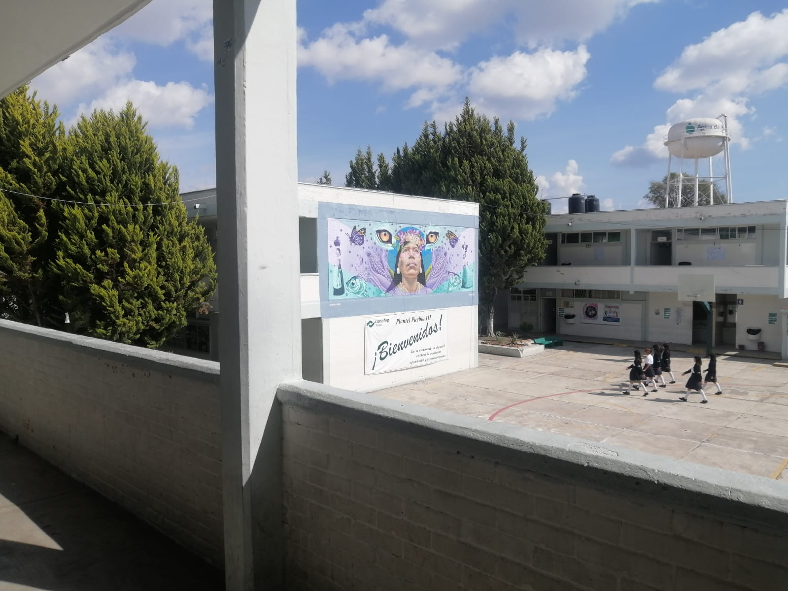

° Nuestro plantel es una muy buena opcion para estudiar tu bachiller.
Ya que tiene como vision formar Profesionales Tecnicos Bachiller en nivel media
superior en el estado de puebla.
|
° Nuestro plantel te permite formar una buena educacion a traves de comunidades de
aprendizaje en un ambiente flexible e incluyente. Con oportunidades de desarrollo
productivo, social y educativo.
|
° Pueden certificar sus competencias profesionales, demostrando que cuentan con los
conocimientos, habilidades y destrezas necesarias para realizar una función de acuerdo
con el nivel de desempeño definido en un Estándar de Competencia.
|
|

|